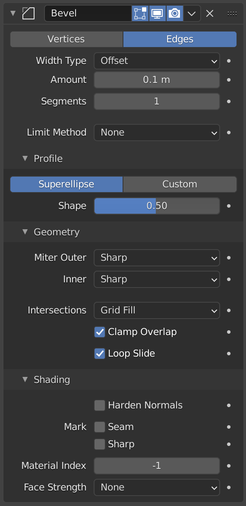

Lesson 10: Bevel modifier
What Bevel does
Real products have rounded edges. Sharp edges catch light in an unrealistic way and look like a toy. The Bevel modifier cuts a small rounded edge along every edge you choose. It is the most useful tool for making things look manufactured.

Image: Blender Manual by the Blender Documentation Team, licensed under CC BY-SA 4.0. Shared unchanged.
Steps
- Tool Add a cube with Shift + A, then Mesh > Cube. menu path unverified in 5.2.1
- Key Press S, X, type 2, Enter to make it wider. Press S, Z, type 0.6, Enter to make it flatter. This starts to look like a phone stand.
- Click the blue wrench tab in Properties. Click Add Modifier, then Generate > Bevel.
- Check The sharp corners now have a small round edge.
- Mouse Double-click Amount, type 0.1, and press Enter. The rounding gets bigger.
- Mouse Double-click Segments, type 3, and press Enter. The curve becomes smooth instead of a flat cut.
- Key Save with Cmd + S as
phone-block.blend.
Why it stays editable: the Bevel is a modifier, so you can change Amount at any time. Only press Ctrl + A on the modifier when you want to make it permanent.
Project: phone block
A wide, flat block with rounded edges, useful as a phone stand. Save as phone-block.blend.